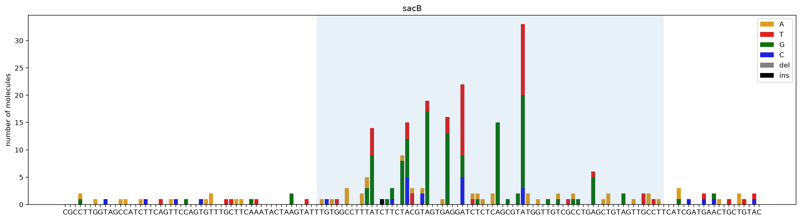

import dgrecHow to use
Designing a template region, calling genotypes from sequencing data, and visualizing mutation profiles.
A DGRec experiment has two computational halves, and this page follows them in order.
Before the experiment, you choose a template region (TR) — the part of the dgrRNA that the reverse transcriptase copies. Most sequences make poor TRs, so it is worth scoring a candidate, and recoding it if necessary, before building anything.
After the experiment, you sequence the variable region (VR) amplicon and measure what the mutagenesis actually produced: which genotypes appeared, and where along the sequence the mutations fell.
Everything below runs as written: the package ships with a small example dataset.
Before the experiment: designing a TR
The TR is a segment of the dgrRNA, a small non-coding RNA, and it is the part the reverse transcriptase copies into the mutagenic cDNA. Not every sequence works: whether the RT can read the dgrRNA depends on how that RNA folds, and a TR that folds badly is simply not mutagenized. tr_score predicts this from the folding energy, on a scale from 0 (poor) to 1 (good).
TR_bad = 'TTAGCGAATGGCGAAATTCGTAAACGCCCTCTGATCGAAACCAACGGCGAAACGGGTGAGATCGTGTGGG'
TR_good = 'AAATGATCGCCAAATCTGAACAGGAAATTGGCAAAGCAACCGCTAAATACTTTTTCTACTCAAACATTAT'
print('bad TR score =', dgrec.tr_score(TR_bad))
print('good TR score =', dgrec.tr_score(TR_good))bad TR score = 0.23
good TR score = 0.84A TR that scores poorly can often be rescued by changing a few of its bases. Two things shape the choice.
The first is the protein. The TR is read in the reading frame of the gene that carries the VR, and that protein has to survive the diversification, so the substitutions are chosen to be synonymous for it.
The second is homology. The cDNA recombines with the VR because the two are alike, so changing the TR alone makes them less alike. This is allowed — nothing forbids recoding the TR on its own — but it is a trade: a recoded TR is reverse-transcribed more efficiently while recombining less efficiently, and the two effects can cancel, leaving the overall mutagenesis no better than before. Introducing the same substitutions into the VR keeps the pair matched and avoids the trade altogether.
optimize_sequence searches for substitutions that are synonymous in that reading frame and that improve the predicted folding of the dgrRNA. It returns one row per candidate, ranked, each with the recoded sequence and its two scores.
import pandas as pd
variants = dgrec.optimize_sequence(TR_bad, N=5, CHANGES=6)
pd.DataFrame(variants)[['New_Variant', 'Score_TRSp', 'Score_TRSpAvd']]| New_Variant | Score_TRSp | Score_TRSpAvd | |
|---|---|---|---|
| 0 | TTAGCGAACGGCGAAATCCGTAAACGCCCTCTGATCGAAACCAACG... | 0.74 | 0.79 |
| 1 | TTAGCGAATGGCGAAATCCGTAAACGCCCTCTGATCGAAACCAACG... | 0.66 | 0.81 |
| 2 | TTAGCGAATGGTGAAATCCGTAAACGCCCTCTGATCGAAACCAACG... | 0.64 | 0.82 |
| 3 | TTAGCGAACGGTGAAATTCGTAAACGCCCTCTGATCGAAACCAACG... | 0.62 | 0.81 |
| 4 | TTAGCGAATGGCGAAATCCGTAAACGCCCTCTGATCGAAACCAATG... | 0.58 | 0.78 |
Directing diversification to chosen positions
The reverse transcriptase makes its errors at adenines, so the adenines of the TR are where diversity appears. Which positions diversify is therefore not fixed: it follows from where the adenines are, and you can put them where you want them.
This is the one case where it is useful not to mirror a change into the VR. Introducing adenines into the TR alone leaves a deliberate mismatch at that codon, which is the point — the cDNA carries the variation into the VR, and the protein is diversified exactly there. The homology cost is the same one as before, but paid deliberately at a few chosen codons rather than spread along the whole sequence.
The codon to reach for is AAC (asparagine). It carries two adenines, and because its third base is a C no combination of adenine substitutions can turn it into a stop codon — so a molecule can reach 15 of the 20 amino acids at that position with no risk of truncating the protein. AAT, the other asparagine codon, is equivalent on both counts. The obvious alternative, the lysine codon AAA, reaches every amino acid but can also become TAA, TAG or TGA, which truncates the protein.
optimize_sequence takes a diversify argument for this, keyed by codon index (not nucleotide position, unlike forbidden_positions). Each entry says what should happen at that codon:
'max'or'min'— tune how many amino acids the position can reach, without constraining which ones.'max'is the shortcut for the paragraph above: the optimiser writesAACinto that codon, locks it, and optimises the folding around it. This changes the protein at that position, deliberately, since that is the residue you have chosen to diversify.['Y', 'F']— the codon must be able to reach all of these amino acids.('min', ['K', 'R'])— both: reach these, and among the codons that can, take the one that brings along the fewest others. Use this to open a position towards a particular chemistry without letting the rest of the amino acid space in.
from dgrec.utils import CODON_TO_AA
#codon 7 of TR_bad is AAA (lysine): it diversifies widely, but can also be truncated
best = dgrec.optimize_sequence(TR_bad, diversify={7: 'max'}, CHANGES=4, N=1)[0]
before, after = TR_bad[21:24], best['New_Variant'][21:24]
print(f"codon 7: {before} ({CODON_TO_AA[before]}) -> {after} ({CODON_TO_AA[after]})")
print(f"folding scores: {best['Score_TRSp']} / {best['Score_TRSpAvd']}")codon 7: AAA (K) -> AAC (N)
folding scores: 0.74 / 0.78To see what each candidate TR would actually produce, pass it to dgrec.lstm.predict_protein_diversity, which generates VR sequences with the LSTM model, translates them, and returns the amino acid frequencies at each position (plot=True draws them as a sequence logo). It needs the lstm extra:
from dgrec.lstm import predict_protein_diversity
for v in variants:
v['Proteins'] = predict_protein_diversity(v['New_Variant'], plot=True)optimize_sequence is documented in full in the predictions API.
After the experiment: calling genotypes
Genotype calling takes the amplicon reads and a reference sequence, groups the reads by their UMI so that PCR and sequencing errors are averaged out within a molecule, and reports the distinct genotypes it finds. It is available both as a command-line tool and as a Python function; the two do the same work.
From the command line
Single reads
dgrec genotypes fastq_path reference_path -o genotypes.csvUsage: dgrec genotypes [OPTIONS] FASTQ REF
Options:
-u, --umi_size INTEGER Number of nucleotides at the beginning of
the read that will be used as the UMI
-q, --quality_threshold INTEGER
threshold value used to filter out reads of
poor average quality
-i, --ignore_pos LIST list of positions that are ignored in the
genotype, e.g. [0,1,149,150]
--match FLOAT match parameter of the aligner
--mismatch FLOAT mismatch parameter of the aligner
--gap_open FLOAT gap_open parameter of the aligner
--gap_extend FLOAT gap_extend parameter of the aligner
-r, --reads_per_umi_thr INTEGER
minimum number of reads required to take a
UMI into account. Using a number >2 enables
to perform error correction for UMIs with
multiple reads
-s, --save_umi_data TEXT path to a csv file to save the details of
the genotypes reads for each UMI. If None
the data isn't saved.
-o, --output TEXT output file path
--help Show this message and exit.Paired reads
dgrec genotypes_paired fwd_fastq_path rev_fastq_path reference_path --fwd_span 0 150 --rev_span 30 150 -o genotypes.csvUsage: dgrec genotypes_paired [OPTIONS] FASTQ_FWD FASTQ_REV REF
Calls dgrec.genotypes_paired.get_genotypes_paired
Options:
--fwd_span <INTEGER INTEGER>...
Span of the reference sequence read in the
forward orientation format: start end
[required]
--rev_span <INTEGER INTEGER>...
Span of the reference sequence read in the
reverse orientation format: start end
[required]
-p, --require_perfect_pair_agreement
Require perfect pair agreement for genotype
calling (default: True). If
set to False, the forward sequence will be
used in case of disagreement.
-u1, --umi_size_fwd INTEGER Number of nucleotides at the beginning of
the fwd read that will be used as the UMI
(default: 10)
-u2, --umi_size_rev INTEGER Number of nucleotides at the beginning of
the rev read that will be used as the UMI
(default: 0)
-q, --quality_threshold INTEGER
Threshold value used to filter out reads of
poor average quality (default: 30)
-i, --ignore_pos LIST List of positions that are ignored in the
genotype (default: [])
--match FLOAT match parameter of the aligner
--mismatch FLOAT mismatch parameter of the aligner
--gap_open FLOAT gap_open parameter of the aligner
--gap_extend FLOAT gap_extend parameter of the aligner
-r, --reads_per_umi_thr INTEGER
Minimum number of reads required to take a
UMI into account (default: 0).
Using a number >2 enables to perform error
correction for UMIs with multiple reads
-s, --save_umi_data TEXT Path to a csv file to save the details of
the genotypes reads for each UMI. If None
the data isn't saved (default: None)
-n INTEGER Number of reads to use. If None all the
reads are used (default: None)
-o, --output TEXT Output file path
--help Show this message and exit.In Python
The Python interface gives the genotypes back as a list, which is more convenient when the result feeds into further analysis.
The package bundles a small example dataset so that everything below can be run as written. dgrec.get_example_data_dir() returns its path; it contains sacB_example.fastq.gz and sacB_ref.fasta used here, a paired-end example, and the trained models.
#The package ships with a small example dataset; this is where it lives
data_path = dgrec.get_example_data_dir()Load the reference and call the genotypes. ignore_pos excludes positions at the edges of the amplicon, where sequencing quality is low and spurious mismatches accumulate.
from Bio import SeqIO
import os
#Getting the path to the fastq file
fastq_file="sacB_example.fastq.gz"
fastq_path=os.path.join(data_path,fastq_file)
#Getting the reference sequence for the amplicon
read_ref_file="sacB_ref.fasta"
ref=next(SeqIO.parse(os.path.join(data_path,read_ref_file),"fasta"))
ref_seq=str(ref.seq)
#Genotypes, sorted by the number of UMI-deduplicated molecules supporting each one
genotypes = dgrec.get_genotypes(fastq_path, ref_seq, ignore_pos=[0,1,2,138,139,140,141],
as_dataframe=True)
genotypes.head(10)n reads: 1000
n_reads pass filter: 847
n_reads aligned: 824
Number of UMIs: 814
Median number of reads per UMI: 1.0
Number of genotypes: 123| genotype | count | |
|---|---|---|
| 0 | 675 | |
| 1 | C56A | 3 |
| 2 | A76G | 3 |
| 3 | A91G | 3 |
| 4 | A91T | 3 |
| 5 | C69T | 2 |
| 6 | T122A | 2 |
| 7 | A91C | 2 |
| 8 | A105G | 2 |
| 9 | C116A | 2 |
Each genotype is represented as a comma-separated list of mutations in the format [RefBase][Position][AltBase]. The table is sorted by the number of UMI-deduplicated molecules supporting each genotype. The first entry is typically the wild-type (unmutated) sequence, whose genotype string is empty.
Without as_dataframe=True the same result comes back as a list of (genotype, count) tuples; both forms are accepted everywhere the package takes a genotype list.
The counts printed above are a summary of how many reads survived each step. Pass verbose=False to silence them, which is what you want when calling this in a loop over many samples.
Visualizing mutation profiles
Plot mutation counts at each position. The shaded region indicates the TR range, where DGRec mutagenesis is active. Note the strong enrichment of mutations at adenine positions within the TR — the hallmark DGRec signature (in this example the TR was designed to have an identical sequence to the VR).
fig = dgrec.plot_mutations(genotypes, ref_seq, sample_name="sacB", TR_range=[50,119])
Where to go next
- API reference — every function, with its arguments and defaults.
dgrec.lstm— the LSTM model of the RT error profile, for predicting which variants a TR will generate. It needs thelstmextra.- Library size estimation — how many distinct variants a library of a given size is expected to contain.